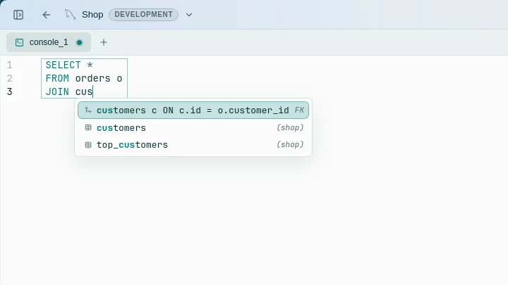
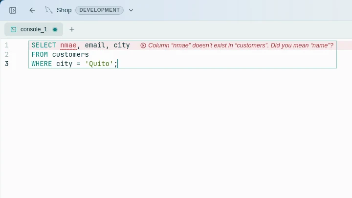
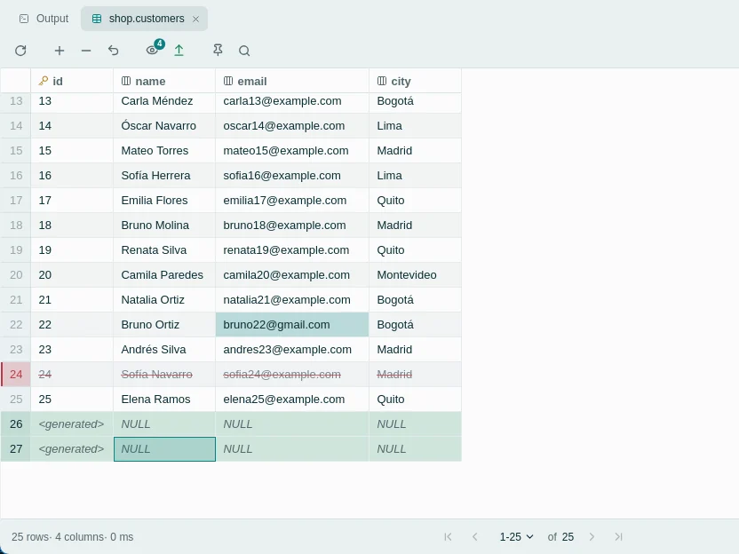

Windows
Sugerido para tu sistemaWindows 10 u 11, de 64 bits.
Sin firma de código. Si SmartScreen dice «Windows protegió su PC», elige Más información → Ejecutar de todas formas. Si falta WebView2, el instalador lo descarga.
Revisa cada cambio de la base de datos como SQL antes de que se ejecute.
Escribe consultas, edita los resultados ahí mismo e inspecciona los cambios pendientes antes de aplicarlos.
PostgreSQL · MySQL · Linux · Windows · macOS · Código abierto

Edita los datos con naturalidad y luego inspecciona el SQL que Rowly DB va a ejecutar, antes de aplicar operaciones INSERT, UPDATE o DELETE.
En las conexiones de producción, cada escritura pide confirmación.

Las sugerencias y los avisos salen de las tablas y columnas de la base de datos a la que estás conectado.

Tablas, columnas y JOIN completos, a partir de tus claves foráneas.

Las tablas y columnas que no existen se marcan, con el nombre que probablemente querías.

Ejecuta una consulta y cambia los datos justo donde los ves. Las ediciones quedan resaltadas en la grilla como cambios pendientes hasta que las apliques.
TSV, CSV, JSON, Markdown o SQL INSERT.
Todas las consultas que ejecutaste, a un Ctrl+E de distancia.
Abre una carpeta y deja tus scripts junto a la conexión.
Pulsa F1 para ver todos los atajos.
Se guardan en el llavero del sistema, nunca en un archivo de texto.
Claros y oscuros, en la galería de Ajustes.
Conéctate a servidores PostgreSQL y MySQL, con TLS y verificación opcional del certificado; otros motores de bases de datos no están soportados.
Versión {{version}} · Notas de la versión · Todos los archivos en GitHub
Windows 10 u 11, de 64 bits.
Sin firma de código. Si SmartScreen dice «Windows protegió su PC», elige Más información → Ejecutar de todas formas. Si falta WebView2, el instalador lo descarga.
Elige según el chip de tu Mac: menú Apple → Acerca de este Mac.
No está notarizada por Apple, así que macOS bloquea la primera apertura. Ve a Ajustes del Sistema → Privacidad y seguridad y elige Abrir igualmente.
x86_64. Necesita WebKitGTK 4.1, que instala tu gestor de paquetes.
.deb.rpm.pkg.tar.zst.AppImage · sin instalarNo hay versiones para ARM. Las actualizaciones llegan desde la app, no desde tu gestor de paquetes.
curl -LO https://github.com/anderson-andres-dev/rowly-db/releases/download/v{{version}}/Rowly.DB_{{version}}_amd64.deb
sudo apt install ./Rowly.DB_{{version}}_amd64.debapt instala las bibliotecas que necesita.
sudo dnf install https://github.com/anderson-andres-dev/rowly-db/releases/download/v{{version}}/Rowly.DB-{{version}}-1.x86_64.rpmdnf descarga el paquete y sus dependencias.
curl -LO https://github.com/anderson-andres-dev/rowly-db/releases/download/v{{version}}/rowly-db_{{version}}_x86_64.pkg.tar.zst
sudo pacman -U ./rowly-db_{{version}}_x86_64.pkg.tar.zstpacman instala las bibliotecas que necesita.
curl -LO https://github.com/anderson-andres-dev/rowly-db/releases/download/v{{version}}/Rowly.DB_{{version}}_amd64.AppImage
chmod +x Rowly.DB_{{version}}_amd64.AppImage
./Rowly.DB_{{version}}_amd64.AppImageNo hay nada que instalar. Guarda el archivo donde quieras ejecutarlo.
¿Ya la tienes? Las versiones nuevas llegan en Ajustes → Actualizaciones, y los paquetes de actualización van firmados. También puedes compilarla desde el código.
Rowly DB tiene doble licencia, MIT o Apache-2.0, a tu elección, sin cuenta y sin edición de pago. El código, las versiones y el registro de incidencias son públicos en GitHub.
Rowly DB es un cliente SQL de escritorio, gratuito y de código abierto. Escribes consultas, exploras el esquema, editas los resultados ahí mismo y revisas cada cambio pendiente como SQL antes de que se ejecute.
Sí, sin cuenta que crear y sin edición de pago.
Sí. Tiene doble licencia, MIT o Apache-2.0, a tu elección, y el código está en GitHub.
Con PostgreSQL y MySQL; otros motores de bases de datos no están soportados.
Windows 10 y 11 (64 bits), macOS con Apple Silicon o Intel, y Linux x86_64. No hay versiones para ARM en Windows ni en Linux.
En la sección de descargas de esta página, o en la última versión en GitHub.
El instalador de Windows no tiene firma de código y la app de macOS no está notarizada por Apple, así que SmartScreen o Gatekeeper pueden frenar la primera apertura. Los pasos para continuar están junto a cada descarga.
Las versiones nuevas aparecen en Ajustes → Actualizaciones y se instalan cuando tú lo decides. Los paquetes de actualización van firmados.
Un cliente SQL gratuito y de código abierto para Windows, macOS y Linux.